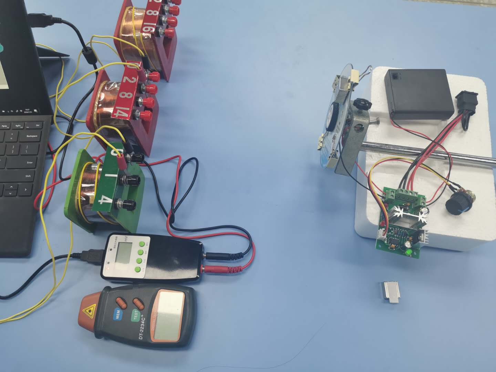
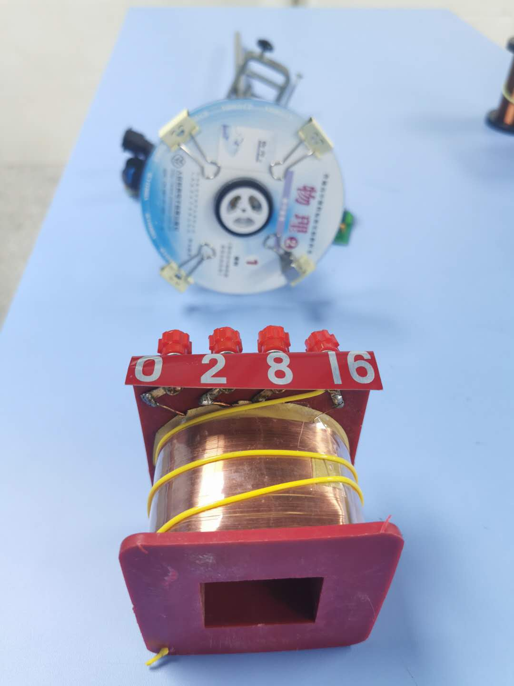
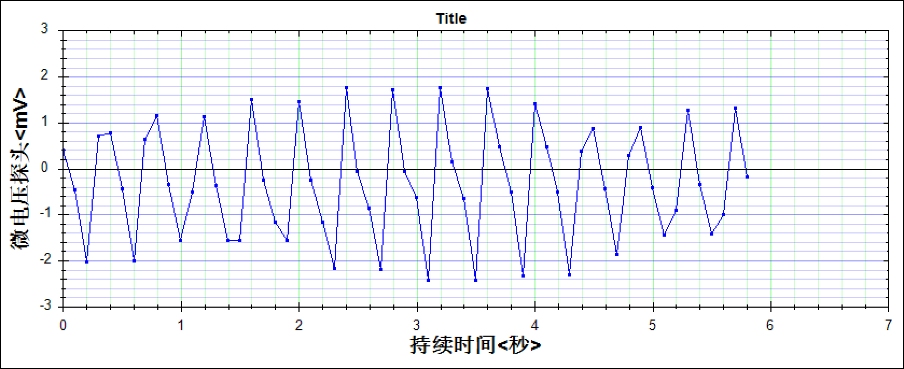

建立模型
光盘在竖直面内转动，磁铁贴在半径 5 cm 处，N 面朝向线圈。线圈固定在光盘前方，轴线对着磁铁转过的最高点，近端面离光盘 。每个磁铁看作一个小磁偶极子，算出它的磁场穿过线圈的磁通量。
磁铁的磁性强弱、线圈的大小没有在实物上测过，取的是估计值。所以页面上的毫伏数用来看趋势、比条件，和实物的读数不必一一对上。
为什么波形是这样
磁铁接近，磁通量增大；正对线圈时，磁通量最大，这一刻它不再增大，电动势为零；离开时磁通量减小，电动势反号。电动势看的是磁通量变化的快慢，就是上图切线的斜率，不是磁通量本身的大小。
线圈贴近光盘时，磁铁只在经过的一小段时间里影响线圈，波形是一对尖脉冲，中间有很长的平静段。线圈离得远时，磁铁转到哪里都在影响它，波形在整圈里都起伏。王硕老师的实测波形没有平静段，读数又只有零点几到一两毫伏，说明线圈离光盘不近。
三个关系
磁铁叠成一组时，磁通量随个数成倍增加，电动势也成倍增加。沿光盘边缘排开时，各个磁铁经过线圈的时刻错开，电动势就不再严格成倍。这正是王硕老师在误差分析里写的“磁铁个数与磁通量不严格成正比”。
面积和转速无关
转速加倍，峰值加倍，一个半周的时间减半，面积不变。面积反映磁通量变化了多少，峰值反映变化得多快。
每秒只采 10 个点会怎样
实验用的微电压传感器每秒采 10 个点。转速 120 r/min 时一圈 0.5 s，只采到 5 个点，连起来是折线，峰值常常落在两个点之间，读数偏小；采样点和峰尖慢慢错开，读数会一会儿高一会儿低。把采样调到每秒 100 个点，波形和峰值就稳定了。
观察任务
- 暂停在“跳到正对”的位置：磁通量多大？切线是什么方向？电动势是多少？
- “研究”选转速，在 60 到 150 r/min 之间记录 5 个点。读数和转速成正比吗？“半周面积”变了吗？
- 保持每秒 10 个点，转速调到 147 r/min，看采样点的峰值怎样慢慢起伏，大约多少秒起伏一次？改成每秒 100 个点再看。
- 点“线圈贴近光盘”，再慢慢把 D 拉远：波形从什么样变成什么样？读数随 D 变化有多快？
- 磁铁改为“沿边缘排开”，记录 2 到 10 个磁铁的读数，还是正比吗？
易错提醒
- 磁通量最大时，电动势恰好为零。电动势取决于磁通量的变化率。
- 转速仪测的是转得多快；只有磁铁、线圈的位置都不变时，转速才和磁通量的变化率成正比。
- “磁铁加倍，磁通量加倍”要看磁铁怎样放。
- 两组实验之间如果线圈挪了位置，读数可以差好几倍；只在同一组里比较。
- 传感器画出的三角形是稀疏的点连成的，不是电压真实的形状。
- 页面的正负号按“线圈的正方向从光盘指向线圈”规定；实测的正负还取决于传感器怎样接线，比的是“接近和离开反号”。
真实装置与实测波形

装置全景。光盘上贴磁铁，由调速电机带着转；线圈固定，接微电压传感器。

线圈与光盘：光盘竖直转动，线圈对着光盘。

实测波形（约 147 r/min，1400 匝，10 个磁铁）。点间隔 0.1 s，峰值随采样位置起伏。
照片和波形来自王硕老师的《法拉第电磁感应定律（实验课）》，这节课 2021 年被评为广东省中小学实验精品课；装置研究见管佩磊、王硕《新教材实施下的高中物理实验创新研究——以“法拉第电磁感应定律”教学为例》（《中学物理教学参考》2021 年第 4 期）。实测波形只在这里展示，没有用来标定页面上的模型。